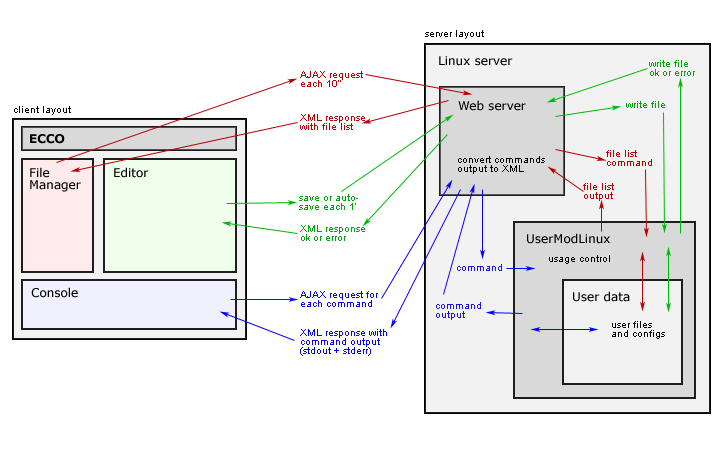

ECCO
Online Code Editor and Compiler
ECCO stands for online code editor and compiler. It's a programming IDE which supports many languages and is accessed through the browser. In other words, isn't necessary that the user has previously installed a programming environment to start to code.
Development Status: Planning
Client-Server diagram:

Developers: